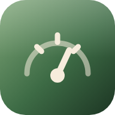
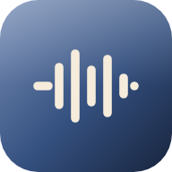

PDF 악보나 악보 사진을 불러오면 이 기기에 보관돼요. 사진 여러 장을 한 번에 고르면 한 곡으로 묶어요.
찾는 악보가 없어요.
레슨이나 발표회에서 연주할 곡을 순서대로 담아 두면, 한 곡이 끝날 때 다음 곡으로 바로 넘어가요.
아직 담긴 악보가 없어요.


악보는 이 기기의 브라우저 안에 보관돼요. 브라우저의 사이트 데이터를 지우면 함께 지워지니, 가끔 백업해 두세요. 백업은 첫 화면에서 네 앱(악보·보잉·템포·녹음·설정)을 한 파일로 묶어 아이클라우드에 저장하고, 아이패드나 새 기기에서 그대로 불러와요.